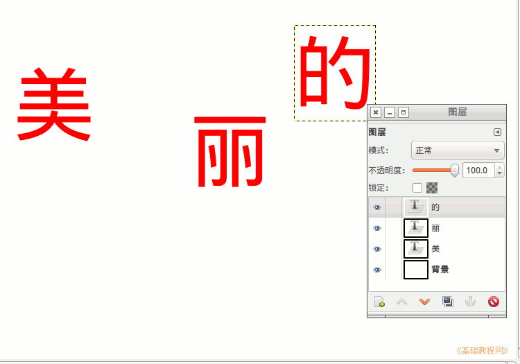
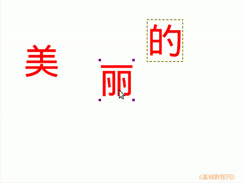
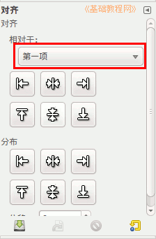
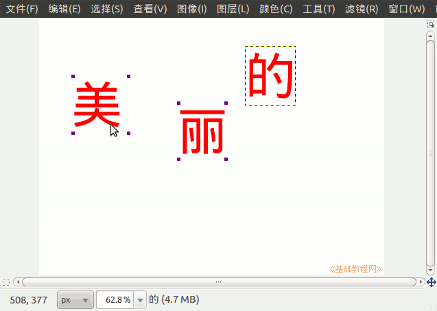
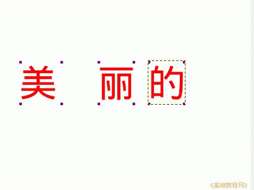
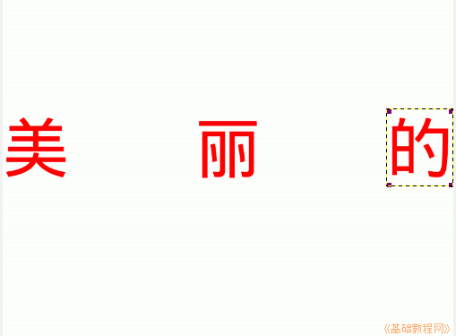

GIMP操作基础教程
作者：Teliute 来源：基础教程网
1、对齐工具
1）打开gimp，点“文件－新建－800×600”；
2）选择文字工具，选择颜色和字号稍大些，写三个字“美”、“丽”、“的”，分别写在三个图层上；

3）选择对齐工具，在“丽”上点一下，四个角上出现小方块，它是第一个选中的是基准项；
 
4）再按住Shift键，在“美”上点一下，它的四周也出现方块，注意次序是丽在前头，美在第二个，同样按住Shift键，再把“的”添加进来；

5）然后点工具箱面板选项里的第二排中间的“垂直居中”按钮后，这三个字就以“丽”为基准排在一条水平线上；

6）再在空白处点一下，把方块焦点落在背景上，再点“美”、点左对齐按钮，再点“丽”、点居中按钮，点“的”、点右对齐按钮，让它们在均匀排列开；

本节学习了GIMP中对齐工具的基本用法，如果你成功地完成了练习，请继续学习；
本教程由86团学校TeliuTe制作|著作权所有
基础教程网：http://teliute.org/
美丽的校园……
转载和引用本站内容，请保留作者和本站链接。
|
|